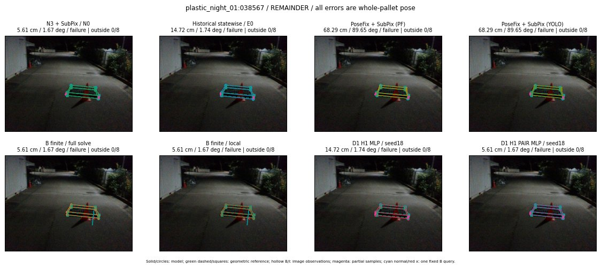

Whole-pallet pose errors; reference is a fixed geometric annotation, not certified physical GT.

Scores are uncalibrated logits. N0 retention is a numerical pose alias; it differs from H0 none or B fallback. B/I and profiles in baseline/B panels are original observations; L panels use new D1 observations. Only one deterministic supported B query is shown in a thumbnail; full support counts are below. Grey privacy rectangles edit the display copy only and are unrelated to O states; all observations were measured on original pixels. Thumbnails use JPEG quality85; detailed scientific panels are PNG.
| Method | Whole pose / cm, deg | Actual source | Selected ID | Score | Archived candidates | Eligible | N0 retained | H0 none | Fallback | Finite profiles |
|---|---|---|---|---|---|---|---|---|---|---|
| Raw YOLO + F | 11.34 cm / 1.75 deg / failure | OTHER | None | N/A | N/A | N/A | False | N/A | None | N/A |
| N3 + SubPix / N0 | 5.61 cm / 1.67 deg / failure | N0 | None | N/A | N/A | N/A | True | N/A | None | N/A |
| Historical statewise / E0 | 14.72 cm / 1.74 deg / failure | E0_REGENERATED | None | N/A | N/A | N/A | False | N/A | False | N/A |
| PoseFix raw | 8.34 cm / 1.61 deg / failure | OTHER | None | N/A | N/A | N/A | False | N/A | None | N/A |
| PoseFix + SubPix (PF) | 68.29 cm / 89.65 deg / failure | OTHER | None | N/A | N/A | N/A | False | N/A | False | historical support records 9; finite audit N/A |
| PoseFix + SubPix (YOLO) | 68.29 cm / 89.65 deg / failure | OTHER | None | N/A | N/A | N/A | False | N/A | False | historical support records 9; finite audit N/A |
| Historical L, seed18 | 5.61 cm / 1.67 deg / failure | N0 | N0 | N/A | 55 | 55 | True | True | True | N/A |
| Historical B fixed bank | 14.72 cm / 1.74 deg / failure | E0_REGENERATED | G13/ORIGINAL_WD/sample/0 | N/A | N/A | N/A | False | N/A | False | N/A |
| Historical B full | 22.57 cm / 1.88 deg / failure | OTHER | NEW/B/ORIGINAL_WD/h0/G13/ORIGINAL_WD/sample/0/PROPOSED_NATIVE_YAW_0 | N/A | N/A | N/A | False | N/A | False | N/A |
| Historical edge full | 26.49 cm / 87.85 deg / failure | OTHER | NEW/edge/SWAPPED_WD/h0/G13/SWAPPED_WD/sample/0/PROPOSED_NATIVE_YAW_0 | N/A | N/A | N/A | False | N/A | False | N/A |
| Historical AB full | 22.57 cm / 1.88 deg / failure | OTHER | NEW/AB/ORIGINAL_WD/h0/G13/ORIGINAL_WD/sample/0/PROPOSED_NATIVE_YAW_0 | N/A | N/A | N/A | False | N/A | False | N/A |
| B finite / fixed bank | 5.61 cm / 1.67 deg / failure | N0 | N0 | N/A | N/A | N/A | True | N/A | True | N/A |
| B finite / full solve | 5.61 cm / 1.67 deg / failure | N0 | N0 | N/A | N/A | N/A | True | N/A | True | N/A |
| B finite / local | 5.61 cm / 1.67 deg / failure | N0 | N0 | N/A | N/A | N/A | True | N/A | True | N/A |
| Edge finite / full solve | 5.61 cm / 1.67 deg / failure | N0 | N0 | N/A | N/A | N/A | True | N/A | True | N/A |
| D0 H0 MLP / seed18 | 5.61 cm / 1.67 deg / failure | N0 | N0 | 2.9831960201263428 | 25 | 25 | True | True | True | N/A |
| D0 H0 MLP / seed19 | 5.61 cm / 1.67 deg / failure | N0 | N0 | 4.788672924041748 | 25 | 25 | True | True | True | N/A |
| D0 H0 MLP / seed20 | 5.61 cm / 1.67 deg / failure | N0 | N0 | 0.917946457862854 | 25 | 25 | True | True | True | N/A |
| D0 H1 MLP / seed18 | 14.72 cm / 1.74 deg / failure | E0_REGENERATED | E0_REGENERATED | -1.1290990114212036 | 25 | 25 | False | False | False | N/A |
| D0 H1 MLP / seed19 | 14.72 cm / 1.74 deg / failure | E0_REGENERATED | E0_REGENERATED | -1.9454814195632935 | 25 | 25 | False | False | False | N/A |
| D0 H1 MLP / seed20 | 14.72 cm / 1.74 deg / failure | E0_REGENERATED | E0_REGENERATED | -2.959216356277466 | 25 | 25 | False | False | False | N/A |
| D1 H0 MLP / seed18 | 5.61 cm / 1.67 deg / failure | N0 | N0 | 7.430579662322998 | 25 | 25 | True | True | True | N/A |
| D1 H0 MLP / seed19 | 5.61 cm / 1.67 deg / failure | N0 | N0 | 8.535796165466309 | 25 | 25 | True | True | True | N/A |
| D1 H0 MLP / seed20 | 5.61 cm / 1.67 deg / failure | N0 | N0 | 7.734722137451172 | 25 | 25 | True | True | True | N/A |
| D1 H1 MLP / seed18 | 14.72 cm / 1.74 deg / failure | E0_REGENERATED | E0_REGENERATED | -1.21292245388031 | 25 | 25 | False | False | False | N/A |
| D1 H1 MLP / seed19 | 14.72 cm / 1.74 deg / failure | E0_REGENERATED | E0_REGENERATED | -1.3716868162155151 | 25 | 25 | False | False | False | N/A |
| D1 H1 MLP / seed20 | 14.72 cm / 1.74 deg / failure | E0_REGENERATED | E0_REGENERATED | -2.073329448699951 | 25 | 25 | False | False | False | N/A |
| D1 H1 ROLE AFFINE / seed18 | 5.61 cm / 1.67 deg / failure | N0 | N0 | -1.03167724609375 | 25 | 25 | True | False | False | N/A |
| D1 H1 ROLE AFFINE / seed19 | 5.61 cm / 1.67 deg / failure | N0 | N0 | -0.6065263152122498 | 25 | 25 | True | False | False | N/A |
| D1 H1 ROLE AFFINE / seed20 | 5.61 cm / 1.67 deg / failure | N0 | N0 | -0.8068072199821472 | 25 | 25 | True | False | False | N/A |
| D1 H1 PAIR MLP / seed18 | 5.61 cm / 1.67 deg / failure | N0 | N0 | -1.8494547605514526 | 25 | 2 | True | False | False | N/A |
| D1 H1 PAIR MLP / seed19 | 5.61 cm / 1.67 deg / failure | N0 | N0 | -1.8460168838500977 | 25 | 2 | True | False | False | N/A |
| D1 H1 PAIR MLP / seed20 | 5.61 cm / 1.67 deg / failure | N0 | N0 | -2.233375072479248 | 25 | 2 | True | False | False | N/A |
| D1 H1 PAIR ROLE AFFINE / seed18 | 5.61 cm / 1.67 deg / failure | N0 | N0 | -1.172127366065979 | 25 | 2 | True | False | False | N/A |
| D1 H1 PAIR ROLE AFFINE / seed19 | 5.61 cm / 1.67 deg / failure | N0 | N0 | -1.0333523750305176 | 25 | 2 | True | False | False | N/A |
| D1 H1 PAIR ROLE AFFINE / seed20 | 5.61 cm / 1.67 deg / failure | N0 | N0 | -0.871727466583252 | 25 | 2 | True | False | False | N/A |
| Regenerated common E0 | 14.72 cm / 1.74 deg / failure | E0_REGENERATED | E0_REGENERATED | N/A | N/A | N/A | False | N/A | False | N/A |